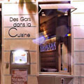
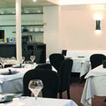

Restaurants
For Parisians, how food looks on a plate is just as important as how it tastes. Colors, textures, and garnishes are impeccably arranged, not only at haute cuisine establishments, but small, simple restaurants where even a humble hot chocolate is sometimes poured in a heart shape on the cup's inside edge.
Come and enjoy the Parisian gastronomical array of restaurants that will arouse your taste buds, intriguingyou with delight and the desirability to continue savoring foods accompanied by wine. Paris restaurants await your booking reservations any day of the week!


